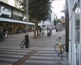

|
|
|
Sponsored Link •
|
Summary
I spent the last week of September in lovely Aarhus, Denmark at the 2003 JAOO conference. I've written up my experiences and thrown in a few photos. If you have the chance next year.. go there for yourself, you won't regret it!
|
Advertisement
|
Due to hurricane Isabel, my travel plans were reshuffled a bit... I wasn't able to make it back to Virginia between conferences (luckily I always overpack slightly). Rather than leaving Boston Thursday evening and flying to Newark Friday night (and then on to Copenhagen) I flew direct from Boston to Newark Friday evening. It took a while for the Continental folks at Logan airport to straighten out my itinerary change, but in the end all was well and I was off.
First to Newark, where I had 4 hours to occupy myself. The trip between terminals took a little, but there wasn't much else to do between 9pm and midnight. A snack and a pint at the Sam Adams pub, and watching CNN was about it. Finally it was time to board. I had a great seat. Exit row behind a bulkhead. A missing row of seats to accommodate the exit.. so more leg room than I could use. That and personal screen and a selection of movies made the flight quite comfortable.
In Copenhagen, I had a very tight connection to the local carrier that flew to Aarhus. After I asked around, I found that the domestic terminal was at the far end of the terminal complex... a kilometre or so away. On a good day it would have been a nice walk... but there was a bus, so I opted for that. I managed to get to the proper gate with a few minutes to spare.
I arrived in Aarhus shortly thereafter... Denmark is a remarkably small country. Not knowing anything about the local travel arrangement or even exactly where (other than the hotel name: The Cab Inn) in town I was headed.. I grabbed a taxi and was taken directly to the hotel. A word to the wise: The trip from the airport to Aarhus was on the pricy side (somewhere around 500 DKK).... somewhere around twice the cost of a comparable ride in the US.
After settling into my hotel cell.. ahh.. room (yes it was small.. but overall adequate to the purpose) and freshening up I had some dinner at Cafe Faust (below and connected to the hotel). It was a nice meal and I sat at a table that was open to outside with a view of the canal.
Following that I took a short walk and returned to my room to sleep off the effects of the overnight flight.
I was up and out by 11:00 to be greeted by a rather cool and rainy morning. I had a great brunch, again at Cafe Faust. By the time I had finished that the rain had stopped, the sun had come out, and the streets were drying.
I spent the afternoon wandering around town with the aid of a small map provided by the hotel. My first goal was to find the conference location. Which I did before long. That done I wandered more or less aimlessly for the remainder of the afternoon.
 Aarhus is a very bicycle-friendly city. Along most streets there
are bike lanes. These are often not part of the street surface:
there's a curb between the street & the bike lane, then another curb
between it and the sidewalk. At larger intersections the bike lanes
even have turn lanes marked. In the photos here, you can see the bike lane between the street & sidewalk and bike ramps alongside stairs.
Aarhus is a very bicycle-friendly city. Along most streets there
are bike lanes. These are often not part of the street surface:
there's a curb between the street & the bike lane, then another curb
between it and the sidewalk. At larger intersections the bike lanes
even have turn lanes marked. In the photos here, you can see the bike lane between the street & sidewalk and bike ramps alongside stairs.
 The city is incredibly pedestrian friendly as well, with many people walking. In the old part of the city, there is a network of pedestrian-only streets. The main one is a shopping street called Sondergade (yes... that is McDonald's you see in the background).
Then dinner at a cafe along the canal followed by prep for my tutorials on Friday.
I had a quick breakfast at the hotel before heading to the conference. After Danish breakfast for a couple days, I have a firm preference for a Southern European breakfast. Thankfully, that's what they were serving at the conference: Coffee, croissants, & brioche.
Having gotten to the conference site, I registered (basically picking up my attendee package and badge. I checked over the program and decided what I wanted to see and checked my email in the Net Cafe hosted by Sun. Then I had a bit of time to wander about before meeting with an Acquisitions Editor from Wiley.
Then it was time for coffee, and to wander the exhibit hall. The last morning session let out and Bill Venners (Bill runs artima.com) came by and we went off to have lunch together. [BTW I thought lunches were quite nice, and according to some Danes that I asked, quite traditional]. After a bit, Dave Thomas joined us.
After lunch I saw Dave Thomas and Andy Hunt give their How to Keep Your Job talk. I already knew the content, but it was entertaining to hear them deliver it and it gave me a chance to finally meet Andy.
The core of their talk was to treat your career like an investment portfolio... invest, diversify, balance, etc.
You can see their presentation on the Pragmatic Programmer site.
Next up was Bo Leuf talking on Wiki and Agile Security Methods. Bo's presentation was done with a set of wiki pages which you can find on his site.
At the break I wandered back to the cafe are for more coffee and ran into Alan Knight (of Cincom, and organiser of this year's Smalltalk Solutions conference). Alan and I had a good talk and by the time we parted company, the next session had begun so I stayed and chatted with the rep from Libelis, who make an JDO implementation.
I made it to the next session: Amplifying the Agile Principles by Jutta Eckstein & Nikolai Josuttis (whose book on the standard C++ library I bought at the conference).
Then it was time for the keynote by Ole Lehrmann Madsen of the University of Aarhus. Madsen was a student of Kristen Nygaard (a co-inventor of OO and Simula-67). The talk was called The Scandinavian School of Object-Orientation - in memory of Ole-Johan Dahl and Kristen Nygaard. This was, I thought, a very interesting talk. It gave insight into one of the creators of the way many of us program.
After a short trip back to the hotel to pick up my laundry, shower & change, it was off to the party! There was a guy I noticed in several talks throughout the day who was wearing a RadSoft Tshirt. [RadSoft is a custom programming shop that uses XP, based in Idaho. They were giving away Tshirt like the one this guy was wearing at XPAU.] I noticed him at a table with a few other and invited myself to join them. It turns out that he had been at XPAU, and his team (who were sitting with him) have been using XP for about a year. We had a great evening talking about various things... mostly centred around XP.
The party was a blast. The beer flowed freely, with the corporate sponsors showing their generosity by buying rounds for the assembled host. Apparently this is a JAOO tradition.. and a fine tradition it is. I have no idea how may beers came and went at our table, but the only one that I had to pay for was the first. The organisers of XPAU (oh.. I am one this year) could learn a few things about throwing a party from the Danes!.. or from the Italians, based on what memories I have of the party at XP2002.
 Breakfast at the conference cafe, and then to the Hangover
Keynote, as it was described by the main speaker: Erich Gamma.
Erich gave an overview and demonstration of the plugin architecture
and capabilities of Eclipse. Then Ivo Totev of SAP discussed how
they've extended Eclipse. Here's a nice shot of Erich with another of the GoF, Ralph Johnson.
Breakfast at the conference cafe, and then to the Hangover
Keynote, as it was described by the main speaker: Erich Gamma.
Erich gave an overview and demonstration of the plugin architecture
and capabilities of Eclipse. Then Ivo Totev of SAP discussed how
they've extended Eclipse. Here's a nice shot of Erich with another of the GoF, Ralph Johnson.
After coffee, it was Martin Fowler's turn with Software Design in the 21st Century. Martin's talk centred around a paper he wrote that was published in the Sept/Oct 2003 issue of IEEE Software. I had just read the article in the last week, but (as with Dave & Andy) it was enjoyable hearing Martin deliver the content. And besides Martin's a good speaker and always enjoyable to listen to.
Some points from the talk:
I ran into Mike Hill on my way to grab a quick lunch. I had said I'd make myself available to sign books for Pearson, but I needed lunch first. Mike was on his way to lunch as well so we ate together and had a good catch-up chat.
Then off to the book signing. There was little interest actually.... which was a little disappointing (no.. not just me.. no-one was doing much signing). I had the pleasure of standing between Martin Fowler and Bjarne Stroustrup. I have to admit that it does feel a little overwhelming at times to be counted in amongst people I was reading when I was learning OO... I still remember devouring the first edition of The C++ Programming Language. It was a bit of a thrill to buy a copy of the third edition this week and get it signed by Stroustrup himself.
After lunch, Bjarne Stroustrup talked on the standardisation of C++. This was an interesting talk... not so much due to the subject... but rather for the opportunity to here C++ talked about by it's creator. I finally made the decision to brush off my C++ skills and learn the standard library (which was just coming out when I last used C++ any amount). I had been considering this for some time as we get queries from more & more C++ shops.
Next up was Kent Beck. Kent's talk was started in a bar in New Orleans during XPAU in August. At the conference dinner at XPAU, Bob Martin talked about XP's values and practises. In response to some who say that the values are the important thing, and that you can use any practises that embody your values, Bob insisted that the practises were crucial. Kent's response: "Wrong answer".
So then, what does Kent think is the crucial thing? The principles. Why? Here's my notes from the talk.
Everyone decides every day how they will do their work that day. What will it be?
Ok, but what tools do you have to think about how you work?
What are these things?
Values
These are the things you hold dear.Everyone has their own list of values... and so does every community. The list of values in the whitebook (eXtreme Programming Explained) was where Kent was in 1996. His comment was that he has a different list now.
Practises
These are specific things that you do.
Values are vague and nebulous while practises are cut & dried... very concrete. For example: "When you wrote that were you holding communication dear?" versus "when you wrote that were you pair programming?"
Practises are particular to the context and domain. Values are more universal.
Values provide purpose to the practises (e.g. we pair program because we value communication) while practises bring accountability to the values.
Principles
Principles are needed when there's stress, when you're down, etc. It's easy to do the right thing when everything is going well... you don't need principle then.
If one of your values is confidence (i.e. having confidence is important to you) and you have some really hairy code to write. If you have the principle of double checking you can use the practise of writing a test (and in a sense say the same thing twice as a check: once in the test and once in the code) or you could use the practise of pair programming (and have someone else there to check your work).
Principles ...
Kent wrapped up his talk by talking about scale free networks. This is a class of networks having the property that if you graph the number of incoming or outgoing connections against the number of nodes having that count, you get a linear plot with many nodes having a low number of connection and few having a high number. The few nodes having a high number of connections are called hubs. The capacity of the network is limited by the connectedness of the biggest hub.
An example of this is an airplane flight network. Heathrow is the most connected hub. To increase the global capacity of the airline industry, you just have to add more connection to/from Heathrow.
OK.. so what. What's that have to do with programming? Well, consider people in a team. The connections are their interactions with other members of the team... the highly interacting people are the hubs: the leads, analysts, architects (good ones anyway), etc. How do we get more communication within teams... bring back (or increase the involvement of) the hubs.
Kent closed with an experiment: Give all team members a card. Have them note on it everything they talk to another team member over a set period of time (day, month, etc). Kent expects the result to be a scale free network.
Here's Kent (centre) and Martin (right), talking with Doug Lea:
Eclipse again
After the break it was back to hear Erich Gamma talk more about Eclipse.
In the evening there was a buffet and networking event at City Hall. It was a pleasant affair. I had the pleasure of meeting Pawel Wielgus, a student in Poland.
The day started with Robin Roos talking about object modelling using The Domain Neutral Component (DNC) (by Peter Coad et.al.) and collaboration patterns as put forth in Streamlined Object Modelling. Robin had some interesting things to say, but overall I found it to be overkill. As an advocate and practitioner of eXtreme Programming I found the result of Robin's exercise to be overly complex and speculative. To me it pointed out one of the main dangers of a classic big-design-up-front (BDUF) approach. In terms of the use of the DNC, Palmer went on in one of his code letter issues (see bdn.borland.com) that the DNC is a starting point and isn't to be used in it's entirety in every context. When the full generality is not required, classes should be combined (e.g. Person & Role, Item & Description). Robin has some good things to say about EJB, and I fully agree with his views on that matter, but his model centric, speculative approach to programming is at the heart of what I (and other XP & Agile supporters) are actively fighting against. Vive la revolution!
There was nothing in the second session that I was particularly eager to see, so I made use of the time to catch up on some email.
Then it was time to go hear/see Ward Cunningham talk. Who introduced Ward escapes me now, but he got it right: "Born inventor. Born teacher. Patient, wise, and kind." The only change I'd make is to replace teacher with mentor.
Ward started by talking a bit about what he's been up to lately:
Then he talked a bit about exploratory testing, citing books by Brian Marick and Bruce Petticord. While XP lets programmers think, exploratory testing lets testers think.
Ward shared an epiphany he had recently:
Some things to be good at include:
See the wiki for more.
Ward proceeded to show us some tools that he's written that let him explore things about the files he has. And he gave a quick look at Fit (see fit.c2.com.
Here's a few interesting comments I noted from the talk:
After lunch I was heading up to listen to Linda Rising and Daniel May talk when I ran into Ward on the stairs. We chatted briefly about his talk. Then he says "So, how's that Smalltalk port of Fit doing?". Ahem.. ah.. umm... "I haven't gotten time to work on it since April." say I somewhat sheepishly. "You got it with you?". "Yes," says I, "it's on my laptop that's in my pack." (that's on my back). "You got time? You want to pair on it some?" Duh! "Well, I was on my way to a couple talks... but nothing that important!" So we grabbed a table in the cafe area and I brought up my latest Fit image. We worked away for a couple hours and made some real progress. As the last electrons faded away from my battery (silly me neglected to bring the power adaptor) Matz came over and the three of us proceeded to discuss the question of what is a scripting language. It was very interesting. Ward nailed it nicely by proposing that scripting is a style of programming and not a characteristic of a specific language. Can you write real programs (as opposed to scripts) in Python or Ruby? Sure... if you go about it the right way (e.g. using TDD and/or XP). Some languages (e.g. Python, Perl, Ruby) support the scripting style more than others (e.g. Java, C++). I see Smalltalk being good at both. You can write solid, enterprise level applications using solid practises and you can also bash out quick scripts in the workspace.
So not only did I have a chance to hang out and chat with Ward, but I got to pair with him (in Smalltalk even). When I related this little story to Mike Hill (who's known Ward & Kent for some time), he (with some incredulity) said something much like "What!? You were invited to pair by Ward! Cool!" Ya.. cool.
Kevlin closed the conference with a keynote titled Beyond Metaphor. No, not the XP metaphor.. rather the metaphors used to describe software development.
Kevlin started off by stating the obvious.. "Metaphor is not the thing itself", but that we use metaphor to the point of not noticing it... so we run the risk of interpreting metaphors more literally than we should.
Next he took us on a survey of the common metaphors used for software development.
Engineering
Personally this is the one I have the most problems with, but I'm here to talk about what Kevlin said.. sooo...
This was originally used to mock software developers. Just like "The Big Bang Theory" was original used to make fun of that theory of the beginning of the universe... "What? It just got created with a big bang?"
Engineering works in physical space... software does not.
The only that really is the same between physical space and software is the 2nd law of thermodynamics: entropy... or put simply: things get messier.
Software is mathematical, but it's not mathematics.
If we consider all engineering disciplines to be siblings, then software definitely doesn't fit. However if we divide engineering into physical (e.g. electrical, mechanical) and informational (e.g. software) then it fits better. Software becomes a cousin of physical engineering, not a sibling.
Architecture
OK, what about architecture.. I mean we have software architects? Architecture addresses an aspect of software development, but not it's whole. Architecture is all about master planning.. designing it up front. That simply doesn't work with software (despite what agile opponents might say... they're either in denial or are delusional). Software requires an evolutionary, piecemeal growth oriented approach.
OK, so not architecture... what about
Craft
Ok.. craft.. I'm big on this one. First of all, it's not mutually exclusive with either architecture or engineering. Software shares several features with Craft:
Some say that something is craft because it's immature. Not so. Craft is what it is because it comes from the skill and role of he individual, not because it's an immature discipline.
Kelvin went on to warn that the history of craftsmanship is not all rosy. Craft Guilds were brutal and exploitive. Not everything that was made was of high quality. When we think of craftsmanship we think of products that have survived the ravages of time. But that's self selective... the only things that have survived to the present were the products that were well made. That doesn't mean that many were not made well... it just means that they didn't make it to the present.
Composing
Finally... is software like composition (literary or musical)? Maybe.. style certainly has a strong role, software has close parallels to technical writing.
Consider how music scales with the number of people involved:
Each increase in scope requires an increase in planning and formality... just like software development.
So after freshening up & a change into something a little more dressy (those that know me well know that "a little more dressy" means dockers rather than jeans) we load into a bus and have a tour of Aarhus, narrated by Mette (one of the absolutely delightful ladies running the show) with Bjarne Stroustrup taking over for the loop through The University of Aarhus grounds. We ended up a the restaurant at the Marina (anyone know the name?).
I had the great pleasure of sitting with a great set of dinner companions: Steve Vinoski (who did lots of CORBA work with IONA), Bjarne Stroustrup, Kelvin Henny, Jos Warmer, Bill Venners, and ??? (help me out). What great dinner company. The food was great, the wine was freely flowing. It must have been some magically combination of all of that, but between us we came up with a potential event for next year: The Ultimate Panel (aka The Panel at the end of the Universe): a 42 hour long panel (running around the clock) that will attempt to answer the questions of life, the universe, and everything software related.
And here's some photos: Matz & Bjarne Stroustrup, Kelvin Henley and Jos Warmer, Bill Venners, and Mike Hill.
The meal was great, the crowd was great. Everyone appeared to have a good time. OK.. it was time to leave (about midnight)... the bus was, of course, long gone having done it's duty in getting us there. OK.. Aarhus is a small town... we can walk. Mike Hill was up to full Americana form and took a bit of convincing but he eventually joined us. We got back to the canal (and the Cab Inn) about 1:00 am. Mike hadn't been there before and was heading for the Radison (the conference hotel). I was feeling wide awake from the walk so I offered to guide him. We arrived at the hotel about 15 minutes later. Hmm... the bar's full.. must be still open. Well, the short story is that we decided to have a drink or two before calling it a night. About 3 am Ward, Bjarne, & Brian Foote wandered in. Ward noticed us at the bar and he & Brian joined us for a drink. The barkeep (Per) impressed upon us the importance of having a shot of Aquavit (kept in the freezer, it still poured like light syrup). Ward & Brian hung about for a short while talking before heading off. Mike & I finally called it a (increasingly misnamed) night about 6:20. I went back to my hotel, and after a couple hours sleep and a shower headed back to the conference centre and the XP workshop.
OK, it's been Thursday for a while by now.
I spent the day in a workshop for local XP practitioners with Ward. It went very well.
In the evening another bus took us to the Steno Museum on the university campus (a museum of science and medicine).
Chili John was in fine form again (he catered the party as well) and provided a wonder meal.
As Mike & I both had a full day tutorial on Friday, we cut out early to get a good night's sleep in preparation.
I was teaching TDD tutorials all day today. It went very well overall. Several people told me they enjoyed it and learnt something that will help them in their work. What more can you hope for.
To debrief from the day, Mike & I had a relaxing beer and headed into town to have dinner at a cafe along the canal, then back to the bar to talk business for a while. Martin Fowler joined us after a short while. I left shortly after that to get ready for an early morning.
All things come to an end, and so must this trip. I shared the ride to the airport with a couple young programmers from Belgium. We parted ways in the Copenhagen airport. In the gate area for my flight back to D.C. I met up with Dave Tomas, Andy Hunt, and Martin Fowler who were on the same flight.
A long flight, but pleasant enough. And now I'm home again in Northern Virginia. But I'll be back at JAOO next year!
Dave
Have an opinion? Be the first to post a comment about this weblog entry.
If you'd like to be notified whenever Dave Astels adds a new entry to his weblog, subscribe to his RSS feed.
 | Dave Astels has been developing hardware and software solutions for more than 20 years in domains ranging from environment control systems to electrical energy trading systems to mass market products. Since the late 1980s he has been working exclusively with object technologies: a mix of C++, Smalltalk, Java, and some more obscure OOPLs. Since the late 1990s, he has been studying, using, evangelizing, and teaching Agile Development processes and practices. He has coauthored/authored two books for Prentice Hall: "A Practical Guide to eXtreme Programming" and "Test-Driven Development: A Practical Guide". He also edits the TDD edition of The Coad Letter, which is part of the Borland Development Network. He co-founded and runs Adaption Software, Inc. (www.adaptionsoft.com). |
|
Sponsored Links
|